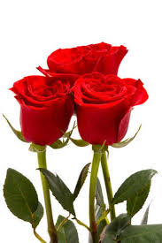
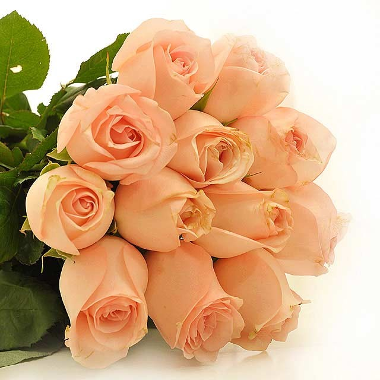
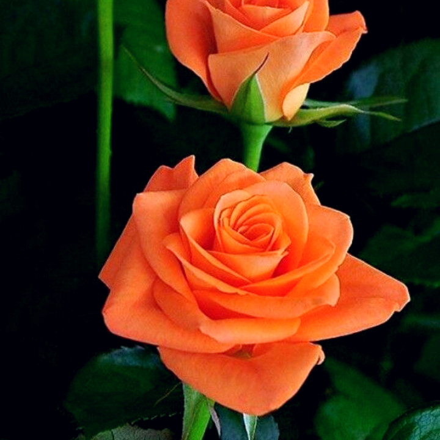
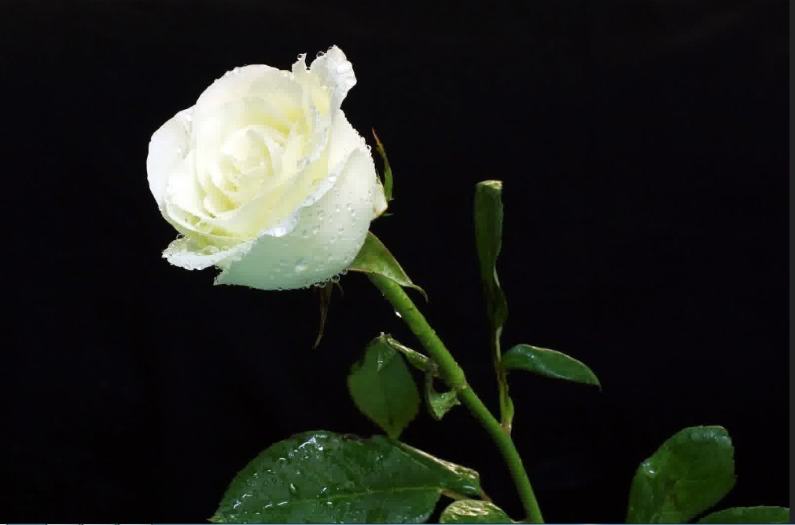
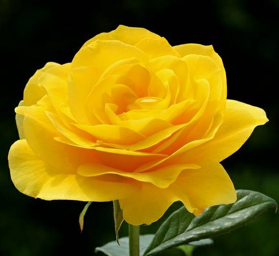
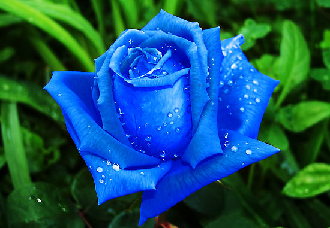
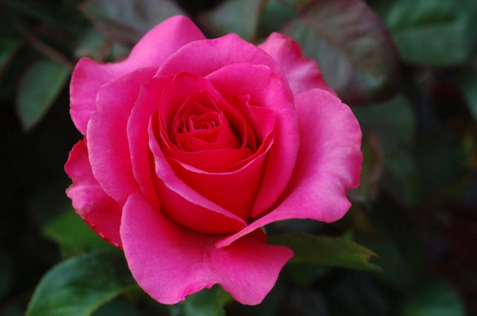

Pengertian
Mawar adalah suatu jenis tanaman semak dari genus Rosa sekaligus nama bunga yang dihasilkan tanaman ini.
Mawar liar terdiri dari 100 spesies lebih, kebanyakan tumbuh di belahan bumi utara yang berudara sejuk.
Spesies mawar umumnya merupakan tanaman semak yang berduri atau tanaman memanjat yang tingginya bisa mencapai 2 sampai 5 meter
Sebagian besar spesies mempunyai daun yang panjangnya antara 5–15 cm dengan dua-dua berlawanan (pinnate).
Daun majemuk yang tiap tangkai daun terdiri dari paling sedikit 3 atau 5 hingga 9 atau 13 anak daun dan
daun penumpu (stipula) berbentuk lonjong, pertulangan menyirip, tepi tepi beringgit, meruncing pada ujung daun dan berduri pada batang yang dekat ke tanah.
Di antara warna yang dimiliki oleh mawar adalah merah, putih, merah muda, kuning dll.
Warna & Filosofinya

Bunga mawar berwarna merah memiliki makna cinta, kekuatan, hasrat atau passion

Arti dari bunga mawar cream ini bisa melambangkan kesopanan, keseriusan, kemurnian, dan kepolosan
Mawar orange colorado, mawar yang memiliki warna orange kemerahan ini memiliki ati hasrat dan semangat

Warna orange pada bunga ini memiliki kesan energik melambangkan pesona dan daya tarik

warna bunga mawar mutih memiliki arti kemurnian, kesucian, serta ketulusan

Mawar kuning bisa membangkitkan kehangatan, perasaan suka cita dan juga lambang persahabatan.

Mawar biru menggambarkan imajinasi dan misteri didalam kesempurnaan cinta dan terdapat sisi kekaguman terhadap seseorang di dalamnya

Warna bunga mawar pink ini bisa menyampaikan emosi yang halus seperti kekaguman, sukacita dan rasa syukur
Makna dari warna bunga mawar ungu sendiri merupakan lambang dari keanggunan, kemegahan, dan keagungan.